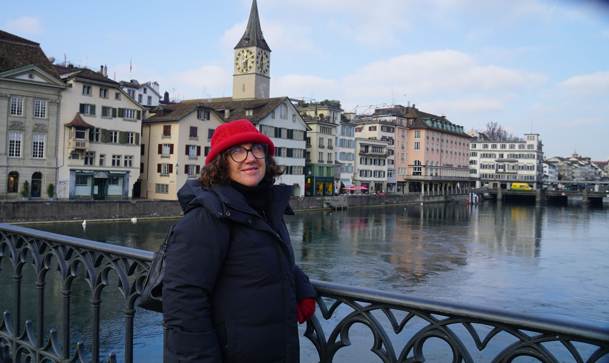
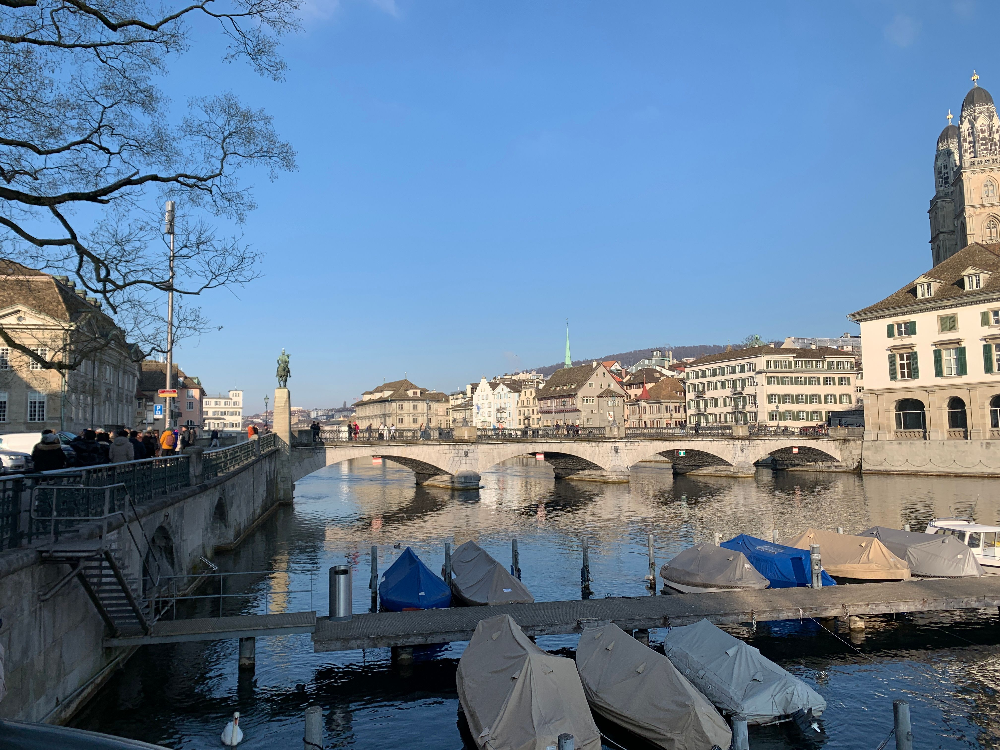
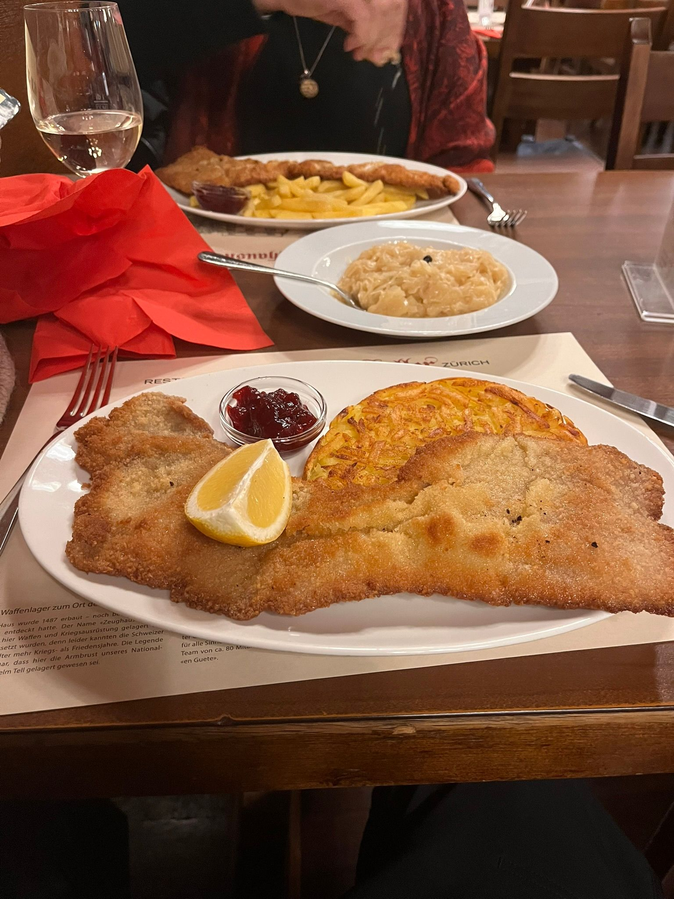
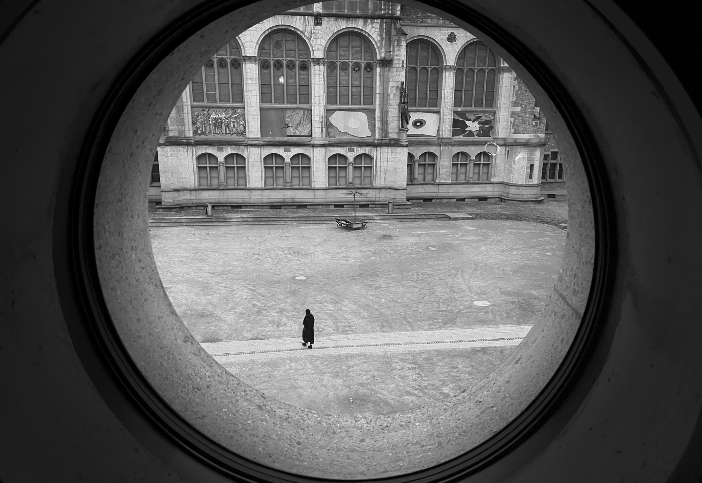
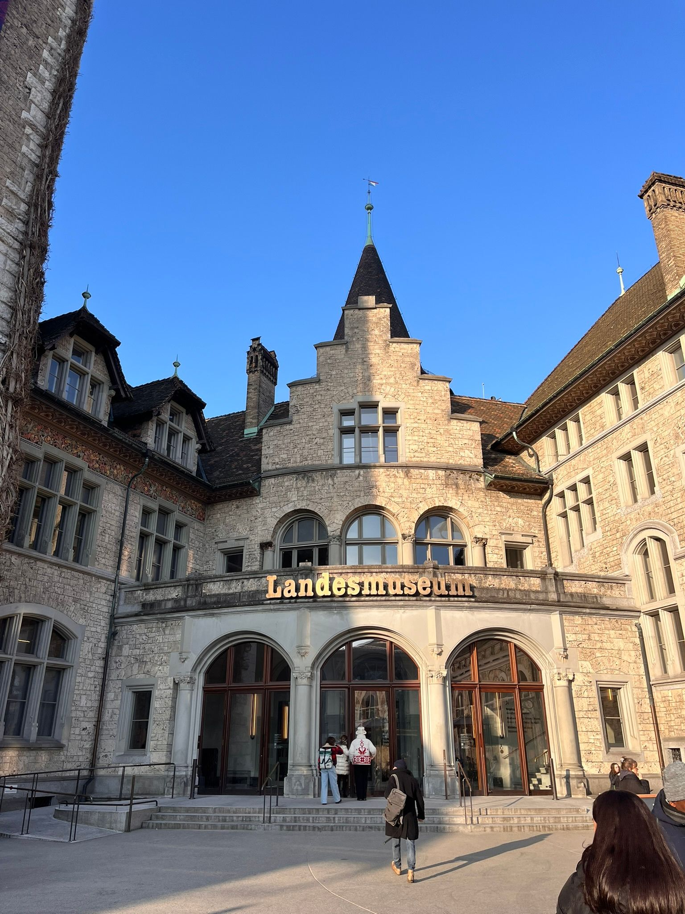
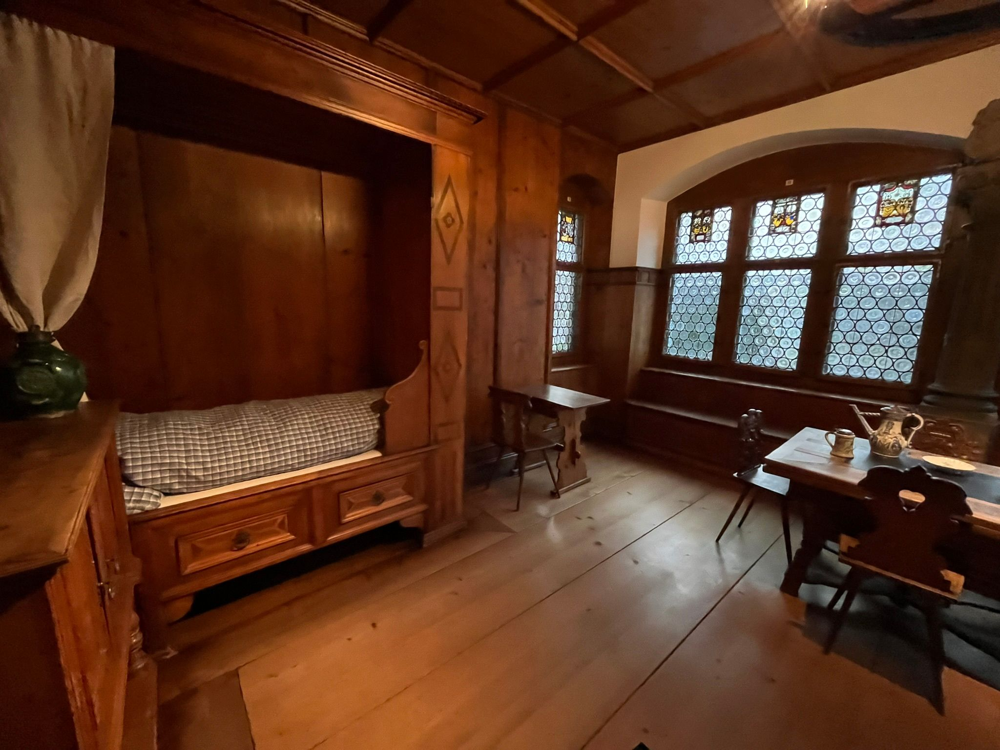
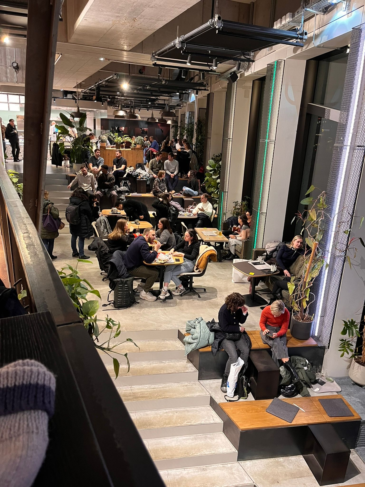

To be fair, everyone told us that Switzerland was expensive, especially Zurich. It did shake us up at first, but after a few days you just fall into some sort of fiscal Buddhist trance where the acceptance of your diminishing finances simply focuses your decision making. One of our defining credos is, quality over quantity, and the Swiss excel in the former.
There is nothing more exhilarating than landing at your first port of call marking the commencement of a long awaited holiday.
For us that excitement was preceded by glimpses of the Swiss Alps as our Singapore Airlines flight banked into Zurich airport. As the sun rose the light tickled the ridges of the Alps as low clouds nestled the lands below.
After 13 hours in their very comfortable Premium Economy seats, we were infused with that worrisome combination of excitement and trepidation of what the next three months would bring.
As was to be expected of Singapore Airlines, we arrived at Zurich airport on time. When we boarded in Singapore it was 32c and we were still decked out in our equatorial clothes. As soon as we hit the concourse, and noticed the sign saying it was 1c, we did the superhero thing where you pop into the loos and immediately get changed into warmer clothes.
We loaded our Holafly eSims and after a bit of confusion regarding the bus to the other terminal and the train, caused no doubt by our flight-addled brains, we worked out which train to catch, and, using our Eurail Pass for the first time, we arrived at our accommodation, The Altstadt Hotel at about midday. Fortunately our room was ready and the concierge was happy to let us check in early. Hooray to them!
Once we were in our room it was time to discover one of the true peculiarities of the Swiss. As they are not a part of the European Union, they don't have the same power points as everyone else. So when it came to charging our devices, there was no USB adapter anywhere so we had to borrow one from the desk. The staff were used to it. If staying in Switzerland for a long period of time, you'll need to buy one.


Once that was sorted we wandered around the old town 'Altstadt' and sourced some lunch from a nice little bakery and had soup, bread and coffee for 24 CHF, not too bad for one of the most expensive cities on earth.
With the cost of everything in Switzerland in mind, on this clear day we continued wandering around and bought a few groceries for breakfast, and a bottle of relatively cheap whisky, from Aldi. We scoured the Special Buys bins picking up a pair of merino longjohns for a song.
After that exertion, we rested in our room until dinner at an old established Swiss restaurant called Zeughauskeller. It had that clichéd ambience you would expect until you realise that it's not a cliché, if it was in suburban Sydney, it would be a cliché, this was the real deal.
To top it off the veal schnitzels that we had were not too bad, although they were wafer thin mind you. Sandra opted for chips whereas I dived deep into the rosti. The warm sauerkraut was sharp and had that feeling that at least there was something on the plate that wouldn't have your GP slapping you across the face. I accompanied my meal with a crisp lager, or two, whilst Sandra enjoyed her first Gruner Veltliner of the trip. Was it all worth 100 CHF ($170 AUD)? That's the great Swiss conundrum.

After our Aldi Bircher Muesli for breakfast we headed off to the Kunsthaus Art Museum, a most rewarding excursion. The museum had loads of works by masters old and new, including an interesting exhibition of the collection of Emil Bührle.
Bührle was a Swiss arms manufacturer and a large part of his collection was gained through Jewish people selling them to finance their escape from the Nazis. Bührle sold weapons to both the Nazis and the allies and used his wealth to buy a place in Swiss high society.
At the gallery a vote was taken on whether the collection should be shown due to the dubious provenance of some of the artworks. There were surveys you could fill out along the way to assist with the ongoing conversation surrounding the exhibition.

📷 Photo by Mark LoganAs a way of thanking the staff at The Altstadt Hotel, for lending us the adapter, we had lunch there. It cost 19 CHF ($33) for two cheese and tomato toasties. Yep, $33 AUD.
Fueled with our expensive snack/lunch we went to the Swiss National Museum (Landesmuseum) which is housed in an old medieval building. There was a huge amount of content about the history of Switzerland, its political system, geology and some fabulous grand rooms from a noble family's house, all carved out of wood. Not sure if they used a Swiss army knife or not.
At the time of our visit there was also an interesting exhibition about Swiss colonialism, and although they were politically neutral, they still exploited Africa and Asia like most of the other Europeans. Hi Nestlé.


For dinner we walked to a new hip joint called Europaallee. There were lots of choices there including Asian, Italian and the traditional Swiss dishes. We opted for dumplings, rice and soup to share.
And students, you know it's cheap to eat somewhere when there are a lot of students and office workers looking for an inexpensive meal.

Eurail works from the airport into Zurich HB but you'll need to buy tickets for the tram system, either online or at the ticket machines. If Switzerland is your only destination, a Swiss Pass is a good idea.
After two days in Zürich — pros and cons
- Trains
- Trams
- Museums
- Cleanliness of the city
- Great public toilets
- Coop stores
- Few cars
- Alcohol not too expensive
- Expensive to eat
- Lots of smoking
- The locals are quite reserved.